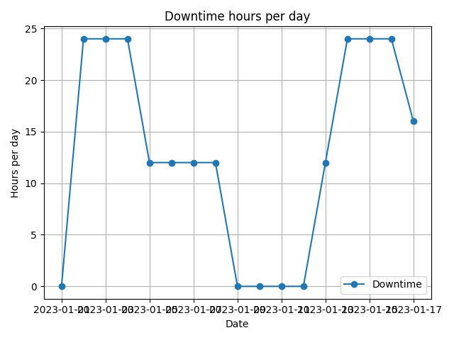

Note
Go to the end to download the full example code.
Operational Availability
This example demonstrates how to calculate and plot the operational availability of a system using the operational_availability function.
/Users/neringaaltanaite/Project/indsl/examples/equipment/plot_operational_availability.py:16: FutureWarning: 'H' is deprecated and will be removed in a future version, please use 'h' instead.
date_range = pd.date_range(start="2023-01-01", periods=100, freq="H")
/Users/neringaaltanaite/Project/indsl/examples/equipment/plot_operational_availability.py:22: FutureWarning: 'H' is deprecated and will be removed in a future version, please use 'h' instead.
index=pd.date_range(start="2023-01-01", periods=400, freq="H"),
import pandas as pd
import matplotlib.pyplot as plt
from indsl.equipment.operational_availability_ import operational_availability
# Create some dummy data with varying operational hours
date_range = pd.date_range(start="2023-01-01", periods=100, freq="H")
availability_data = pd.Series(
[1 if (i // 24) % 4 == 0 else 0 for i in range(100)] # Day 1: 1 hour up every 4th hour
+ [1 if (i // 12) % 2 == 0 else 0 for i in range(100, 200)] # Day 2: 1 hour up every 2nd hour
+ [1 for _ in range(200, 300)] # Day 3: Up for all 24 hours
+ [0 for _ in range(300, 400)], # Day 4: Down for all 24 hours
index=pd.date_range(start="2023-01-01", periods=400, freq="H"),
)
# Calculate the operational availability and downtime
availability_daily_uptime = operational_availability(availability=availability_data, output="Uptime")
availability_hourly_uptime = operational_availability(availability=availability_data, output="Uptime")
availability_monthly_uptime = operational_availability(availability=availability_data, output="Uptime")
availability_daily_downtime = operational_availability(availability=availability_data, output="Downtime")
availability_hourly_downtime = operational_availability(availability=availability_data, output="Downtime")
availability_monthly_downtime = operational_availability(availability=availability_data, output="Downtime")
# Plot the downtime and/or uptime
plt.plot(availability_daily_downtime, "o-", label="Downtime")
plt.xlabel("Date")
plt.ylabel("Hours per day")
plt.title("Downtime hours per day")
plt.legend()
plt.grid(True)
plt.tight_layout()
plt.show()
Total running time of the script: (0 minutes 0.191 seconds)